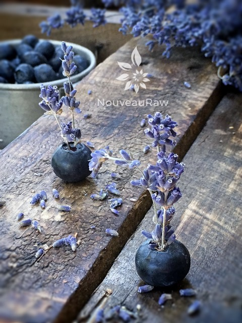

Blueberry Lavender Chia Drink

~ raw, vegan, gluten-free, nut-free, Paleo ~
Are you ready for this? For reals? I am serious if you are prepared for a drink that; helps prevent dehydration, is alkalizing to the body, rich in omega-3 fatty acids, has a healthy dose of dietary fiber, is full of anti-oxidants, provides a high-quality complete protein, is low-glycemic and (just want to take a moment to acknowledge this run-on sentence lol)… and will also provide you with antioxidants, calcium, omega-6 oil, phosphorous, magnesium, iron, and zinc. All that in one drink!
Lavender
I love the deeply rooted aroma of lavender and sometimes will sneak it into my recipes. If you are new to using this ingredient, please click (
here) to read a quick write about this amazing herb.
Remember that run-on sentence up above where I listed off all the health benefits of this drink? Well, there is more! I haven’t even tapped into what else lavender brings into the mix of things. I promise to use better punctuation this time. :)
Lavender can help treat headaches, sinus congestion, hangovers, tiredness, exhaustion, and tension. It is calming, uplifting, refreshing, soothing, and purifying. And can help reduce stress and irritability. My suggestion, when adding the lavender into the blender, is first vigorously to rub it between your palms. Let the crushed flower buds to fall into the blender, then lift your hands to your face and take a deep inhale. You will begin to feel the effects of this drink before it even enters your body.
I hope you enjoy this energy-packed recipe. Use it as a great way to start your day or as a pick-me-up when the mid-day slumps hit. Please be sure to leave a comment below; I love hearing from you. Many blessings, amie sue
Yields 5 cups
- 3 cups water
- 1/4 cup organic fresh lemon juice
- 1/4 cup chia seeds
- 1 cup organic blueberries
- 1 tsp liquid stevia
- Pinch culinary lavender buds, to taste
Preparation:
- In the blender combine the water, lemon juice, chia seeds, blueberries, stevia, and lavender. Blend until the blueberries are liquefied.
- NOTE! Go very light on adding the lavender, adding more only if desired. It is a potent flower and can hijack the drink real quick.
- I wanted to make this drink sugar-free, so I used my favorite liquid stevia. If you are not a fan of that, you can add any liquid sweetener you like.
- Be sure to use freshly squeezed lemon juice; it makes all the difference in flavor.
- Place in the fridge to thicken for 30+ minutes. The longer it sits, the more suspended the chia seeds get after shaking.
- You can pre-make this drink and store it in the fridge for a few days… enjoying as needed. Mason jars are perfect for these types of drinks because you need to shake them before and in between sips.
I had a zen-like moment with my food. :)

© AmieSue.com